library("tidyverse")
library("sf")
library("tmap")
library("terra")PatTrEnvDat Week 6
Import wild boar data and convert to sf object
wildschwein_BE <- read_delim("wildschwein_BE_2056.csv", ",") |>
st_as_sf(coords = c("E", "N"), crs = 2056, remove = FALSE)Task 1: Import and visualize spatial data
Import the vector dataset
fanel <- read_sf("Feldaufnahmen_Fanel.gpkg")View the column names and first few rows
names(fanel)[1] "FieldID" "Frucht" "geom" head(fanel)Simple feature collection with 6 features and 2 fields
Geometry type: POLYGON
Dimension: XY
Bounding box: xmin: 2570249 ymin: 1202176 xmax: 2571719 ymax: 1203436
Projected CRS: CH1903+ / LV95
# A tibble: 6 × 3
FieldID Frucht geom
<dbl> <chr> <POLYGON [m]>
1 1 Roggen ((2570914 1202743, 2570917 1202749, 2570985 1202833, 2571294 1…
2 0 <NA> ((2570893 1202758, 2570893 1202758, 2570959 1202845, 2570985 1…
3 0 <NA> ((2570868 1202776, 2570872 1202781, 2570913 1202828, 2570946 1…
4 2 Wiese ((2570882 1203234, 2570641 1202974, 2570630 1202983, 2570606 1…
5 3 Weide ((2570249 1203116, 2570371 1203328, 2570481 1203197, 2570390 1…
6 5 Weide ((2570378 1203320, 2570466 1203436, 2570552 1203289, 2570481 1…Get a summary of the data
summary(fanel) FieldID Frucht geom
Min. : 0.0 Length:975 POLYGON :975
1st Qu.:112.5 Class :character epsg:2056 : 0
Median :354.0 Mode :character +proj=some...: 0
Mean :399.4
3rd Qu.:722.5
Max. :968.0 Check data types
sapply(st_drop_geometry(fanel), class) FieldID Frucht
"numeric" "character" Check coordinate reference system
st_crs(fanel)$epsg[1] 2056Task 2: Annotate Trajectories from Vector Data
Convert DatetimeUTC to proper datetime format
wildschwein_BE$DatetimeUTC <- as.POSIXct(wildschwein_BE$DatetimeUTC, tz = "UTC")Extract month from datetime
wildschwein_BE$Month <- format(wildschwein_BE$DatetimeUTC, "%m")Filter for May (05) and June (06)
wildschwein_summer <- wildschwein_BE |>
filter(Month %in% c("05", "06"))Verify the filtering
table(wildschwein_summer$Month)
05 06
7409 8150 Quick plot to visualize overlap
plot(st_geometry(fanel), main = "Study Area with Wild Boar Locations")
plot(st_geometry(wildschwein_summer), add = TRUE, col = "red", pch = 20, cex = 0.5)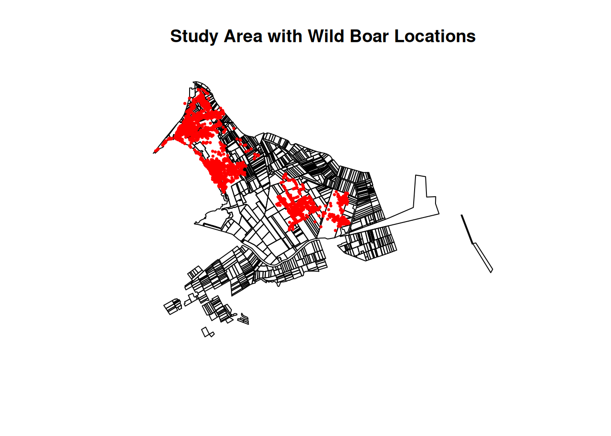
Perform spatial join
wildschwein_annotated <- st_join(wildschwein_summer, fanel)Examine the results
head(wildschwein_annotated)Simple feature collection with 6 features and 9 fields
Geometry type: POINT
Dimension: XY
Bounding box: xmin: 2570059 ymin: 1205242 xmax: 2570096 ymax: 1205256
Projected CRS: CH1903+ / LV95
# A tibble: 6 × 10
TierID TierName CollarID DatetimeUTC E N
<chr> <chr> <dbl> <dttm> <dbl> <dbl>
1 002A Sabi 12275 2015-05-01 00:00:17 2570093. 1205256.
2 002A Sabi 12275 2015-05-01 00:15:25 2570093. 1205249.
3 002A Sabi 12275 2015-05-01 00:30:15 2570091. 1205253.
4 002A Sabi 12275 2015-05-01 00:45:15 2570059. 1205242.
5 002A Sabi 12275 2015-05-01 01:00:30 2570078. 1205246.
6 002A Sabi 12275 2015-05-01 01:15:43 2570096. 1205256.
# ℹ 4 more variables: geometry <POINT [m]>, Month <chr>, FieldID <dbl>,
# Frucht <chr>names(wildschwein_annotated) [1] "TierID" "TierName" "CollarID" "DatetimeUTC" "E"
[6] "N" "geometry" "Month" "FieldID" "Frucht" Check how many points got annotated with crop data
table(!is.na(wildschwein_annotated$Frucht))
FALSE TRUE
608 14951 Count observations per crop type
crop_counts <- wildschwein_annotated |>
st_drop_geometry() |>
count(Frucht) |>
arrange(desc(n))View the results
print(crop_counts)# A tibble: 25 × 2
Frucht n
<chr> <int>
1 Wald 9459
2 Feuchtgebiet 2201
3 Gerste 1479
4 <NA> 608
5 Rueben 445
6 Bohnen 329
7 Wiese 301
8 Zwiebeln 221
9 Mais 149
10 Weizen 128
# ℹ 15 more rowsVisualize the top crops
ggplot(crop_counts, aes(x = reorder(Frucht, -n), y = n)) +
geom_bar(stat = "identity") +
labs(x = "Crop Type", y = "Number of Observations") +
theme(axis.text.x = element_text(angle = 45, hjust = 1))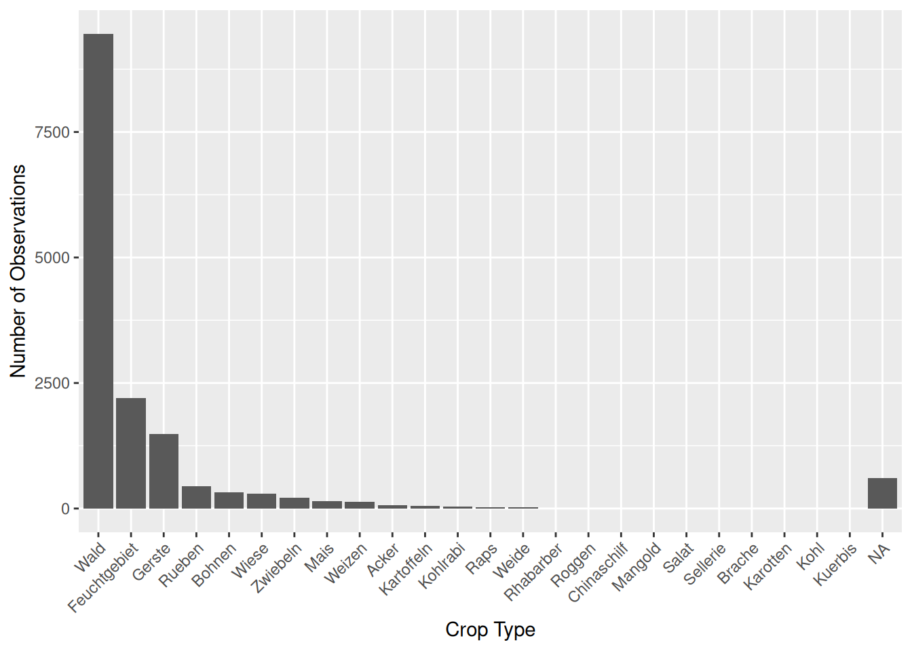
Extract hour from datetime
wildschwein_annotated$Hour <- format(wildschwein_annotated$DatetimeUTC, "%H")Calculate percentage per crop per hour
hourly_crop_dist <- wildschwein_annotated |>
st_drop_geometry() |>
group_by(Hour, Frucht) |>
summarise(n = n()) |>
mutate(percent = n / sum(n) * 100) |>
filter(!is.na(Frucht)) # Remove NA valuesView results
head(hourly_crop_dist)# A tibble: 6 × 4
# Groups: Hour [1]
Hour Frucht n percent
<chr> <chr> <int> <dbl>
1 00 Acker 14 2.08
2 00 Bohnen 62 9.20
3 00 Chinaschilf 2 0.297
4 00 Feuchtgebiet 28 4.15
5 00 Gerste 91 13.5
6 00 Kartoffeln 6 0.890Task 3: Explore Annotated Trajectories
Filter to the three animals and top crops
wildschwein_individuals <- wildschwein_annotated |>
filter(TierName %in% c("Sabi", "Ruth", "Rosa")) |>
filter(!is.na(Frucht)) |> # Remove points without crop info
mutate(
Hour = as.numeric(format(DatetimeUTC, "%H")),
Month = format(DatetimeUTC, "%B"),
Month = factor(Month, levels = c("May", "June")),
TierName = factor(TierName, levels = c("Sabi", "Ruth", "Rosa"))
)Get top 5 crops for each animal
top_crops_per_animal <- wildschwein_individuals |>
st_drop_geometry() |>
group_by(TierName, Frucht) |>
summarise(n = n()) |>
group_by(TierName) |>
top_n(5, n) |>
pull(Frucht) |>
unique()Plot activity patterns by hour for each animal
ggplot(wildschwein_individuals |> filter(Frucht %in% top_crops_per_animal),
aes(x = Hour, fill = Frucht)) +
geom_histogram(binwidth = 1, position = "stack") +
facet_wrap(~TierName, ncol = 1, scales = "free_y") +
labs(title = "Hourly Activity Patterns by Animal and Crop Type",
x = "Hour of Day",
y = "Number of Observations",
fill = "Crop Type") +
scale_x_continuous(breaks = seq(0, 23, by = 3)) +
theme_minimal() +
theme(legend.position = "bottom")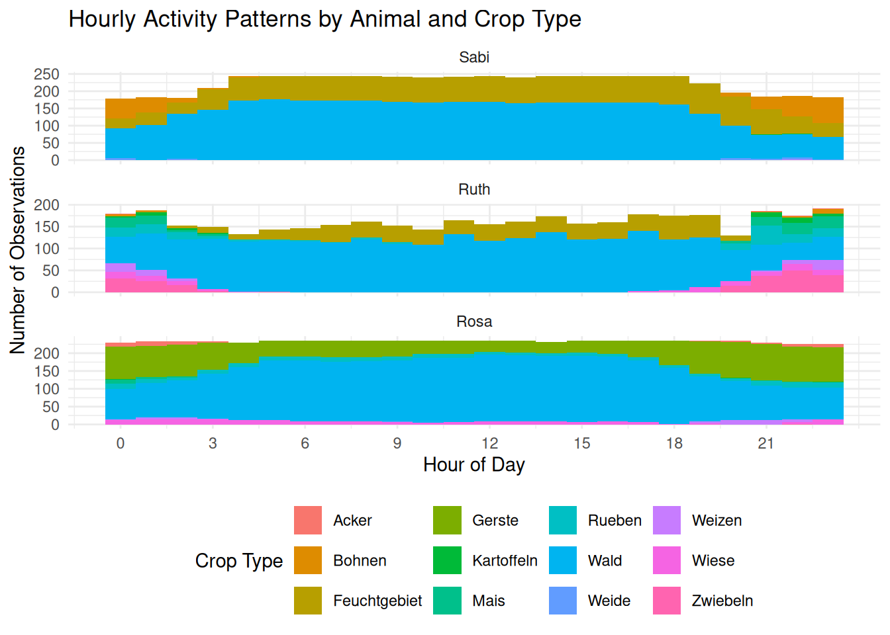
Create individual maps for each animal Visualization with crops and individual animals
tm_shape(fanel) +
tm_polygons("Frucht", palette = "Set3", title = "Crop Type") +
tm_shape(wildschwein_individuals) +
tm_dots(size = 0.1, col = "TierName",
palette = c(Sabi = "red", Ruth = "blue", Rosa = "green")) +
tm_facets(by = "TierName", ncol = 1) +
tm_layout(legend.outside = TRUE)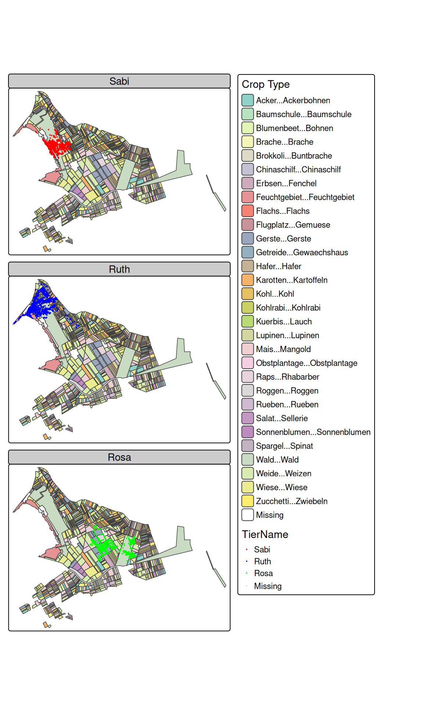
Create bar plot of crop preferences by animal
ggplot(wildschwein_individuals |> filter(Frucht %in% top_crops_per_animal),
aes(x = Frucht, fill = TierName)) +
geom_bar(position = "dodge") +
labs(title = "Crop Preferences by Individual Wild Boar",
x = "Crop Type",
y = "Number of Observations") +
theme(axis.text.x = element_text(angle = 45, hjust = 1)) +
scale_fill_brewer(palette = "Set2", name = "Animal") +
facet_wrap(~Month, ncol = 1)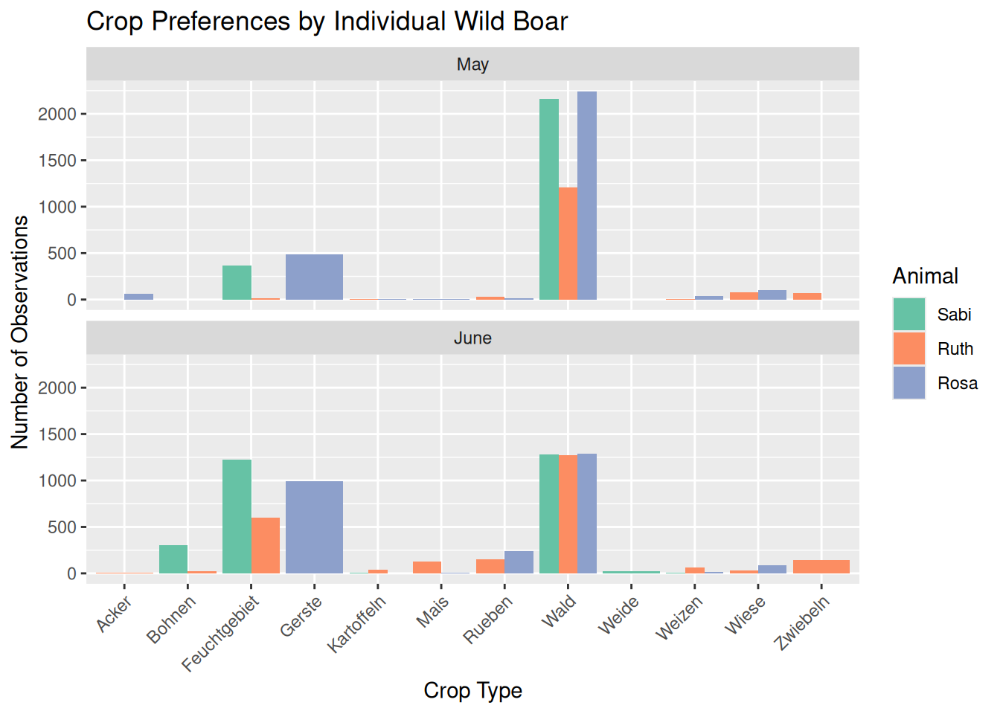
Create circular plots for each animal
ggplot(wildschwein_individuals |> filter(Frucht %in% top_crops_per_animal),
aes(x = Hour, fill = Frucht)) +
geom_histogram(binwidth = 1, alpha = 0.8) +
coord_polar() +
scale_x_continuous(limits = c(0, 24), breaks = seq(0, 24, by = 6)) +
labs(title = "Daily Activity Patterns by Individual",
x = "Hour of Day",
y = "Count") +
facet_grid(Frucht~TierName) +
theme_minimal() +
theme(legend.position = "none")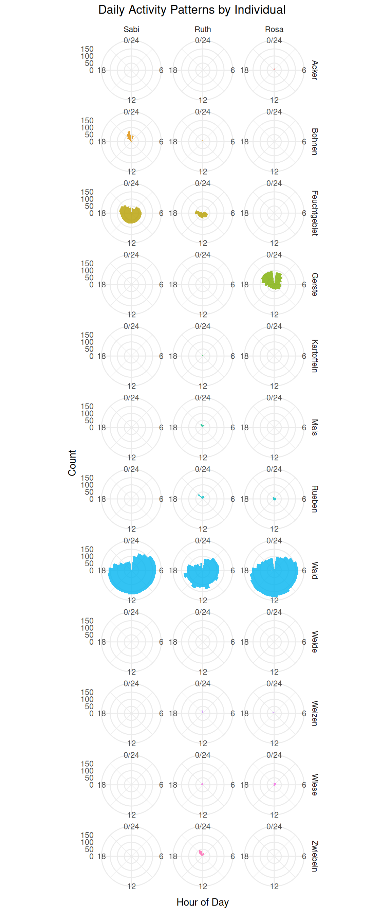
Task 4: Import and Visualize Vegetation Height
Import the vegetation height raster
vegetation_height <- rast("vegetationshoehe_LFI.tif")Check basic raster properties
print(vegetation_height)class : SpatRaster
dimensions : 5303, 7001, 1 (nrow, ncol, nlyr)
resolution : 1, 1 (x, y)
extent : 2568153, 2575154, 1202306, 1207609 (xmin, xmax, ymin, ymax)
coord. ref. : +proj=somerc +lat_0=46.9524055555556 +lon_0=7.43958333333333 +k_0=1 +x_0=2600000 +y_0=1200000 +ellps=bessel +towgs84=674.374,15.056,405.346,0,0,0,0 +units=m +no_defs
source : vegetationshoehe_LFI.tif
name : vegetationshoehe_LFI
min value : 0.00
max value : 47.58 st_crs(vegetation_height)$epsg[1] NAres(vegetation_height)[1] 1 1minmax(vegetation_height) vegetationshoehe_LFI
min 0.00
max 47.58Basic plot with color gradient
plot(vegetation_height,
main = "Vegetation Height (m)",
axes = TRUE)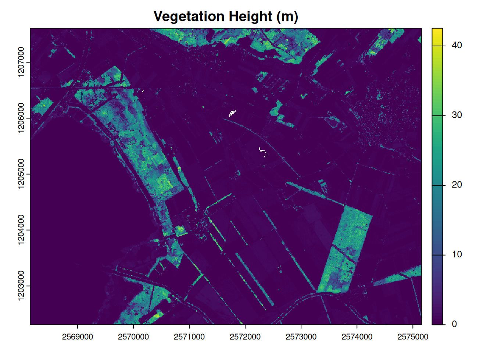
tm_shape(vegetation_height) +
tm_raster(title = "Vegetation Height (m)",
palette = "YlGn",
alpha = 0.7) +
tm_shape(wildschwein_BE) +
tm_dots(size = 0.05, col = "red", alpha = 0.3) +
tm_layout(
main.title = "Wild Boar Locations vs. Vegetation Height",
main.title.position = "center",
main.title.size = 1.1,
legend.outside = TRUE,
legend.outside.position = "right"
)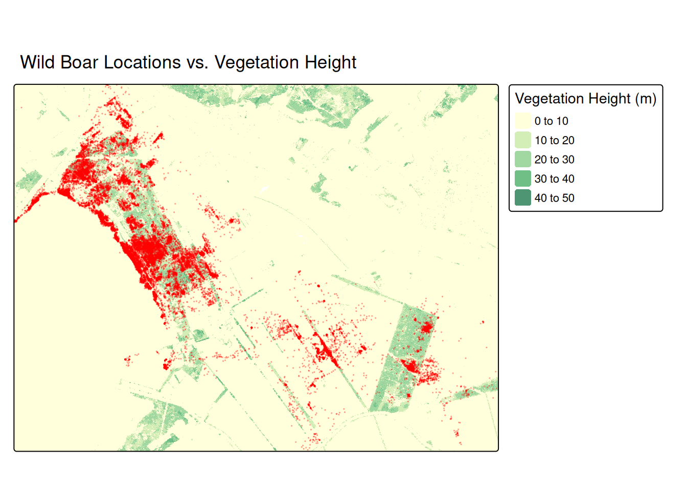
Task 5: Annotate Trajectories with Vegetation Height
Check CRS of both datasets
st_crs(wildschwein_BE)$epsg # Check wild boar CRS[1] 2056st_crs(vegetation_height)$epsg # Check vegetation raster CRS[1] NANot matching, transforming the points:
wildschwein_BE <- st_transform(wildschwein_BE, crs(vegetation_height))Convert sf points to terra’s vect format
wildschwein_vect <- vect(wildschwein_BE)Extract values using terra’s extract
vegetation_annotations <- terra::extract(
x = vegetation_height, # SpatRaster object
y = wildschwein_vect, # SpatVector points
method = "bilinear", # Interpolation method
ID = FALSE # Don't include feature IDs
)Rename the extracted column
names(vegetation_annotations) <- "vegetation_height"Combine with original data
wildschwein_veg <- cbind(
st_drop_geometry(wildschwein_BE), # Keep all original columns
vegetation_height = vegetation_annotations$vegetation_height,
geometry = st_geometry(wildschwein_BE) # Add geometry back
) |>
st_as_sf()Check results
head(wildschwein_veg)Simple feature collection with 6 features and 8 fields
Geometry type: POINT
Dimension: XY
Bounding box: xmin: 2570379 ymin: 1204752 xmax: 2570409 ymax: 1204863
Projected CRS: unnamed
TierID TierName CollarID DatetimeUTC E N Month
1 002A Sabi 12275 2014-08-22 21:00:12 2570409 1204752 08
2 002A Sabi 12275 2014-08-22 21:15:16 2570402 1204863 08
3 002A Sabi 12275 2014-08-22 21:30:43 2570394 1204826 08
4 002A Sabi 12275 2014-08-22 21:46:07 2570379 1204817 08
5 002A Sabi 12275 2014-08-22 22:00:22 2570390 1204818 08
6 002A Sabi 12275 2014-08-22 22:15:10 2570390 1204825 08
vegetation_height geometry
1 20.33210 POINT (2570409 1204752)
2 23.83827 POINT (2570402 1204863)
3 24.92032 POINT (2570394 1204826)
4 21.48844 POINT (2570379 1204817)
5 15.60438 POINT (2570390 1204818)
6 23.27235 POINT (2570390 1204825)Count NA values (points outside raster coverage)
sum(is.na(wildschwein_veg$vegetation_height))[1] 11Remove points with NA vegetation values
wildschwein_veg <- wildschwein_veg |>
filter(!is.na(vegetation_height))Visualize Distribution
ggplot(wildschwein_veg, aes(x = vegetation_height)) +
geom_histogram(bins = 30, fill = "darkgreen") +
labs(title = "Distribution of Vegetation Height at Wild Boar Locations",
x = "Vegetation Height (m)",
y = "Count")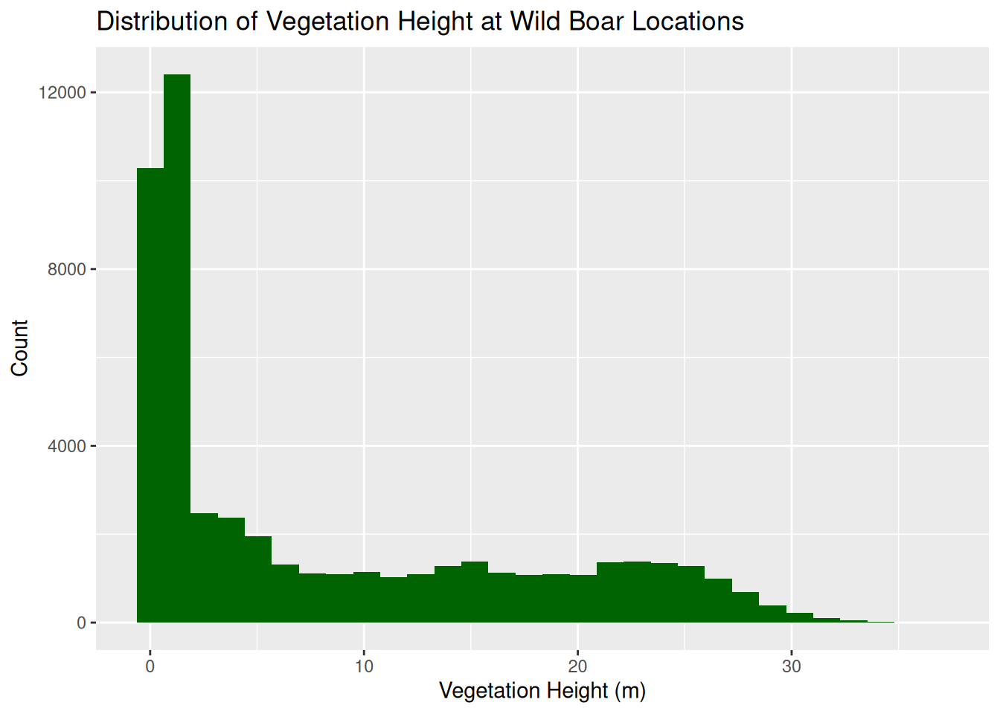
Add hour column
wildschwein_veg <- wildschwein_veg |>
mutate(Hour = as.numeric(format(DatetimeUTC, "%H")))Plot
ggplot(wildschwein_veg, aes(x = Hour, y = vegetation_height)) +
geom_point(alpha = 0.1, color = "darkgreen") +
geom_smooth(method = "loess", color = "red", se = FALSE) + # se=FALSE disables CI
labs(title = "Vegetation Height Usage by Hour",
y = "Vegetation Height (m)") +
scale_x_continuous(breaks = 0:23)`geom_smooth()` using formula = 'y ~ x'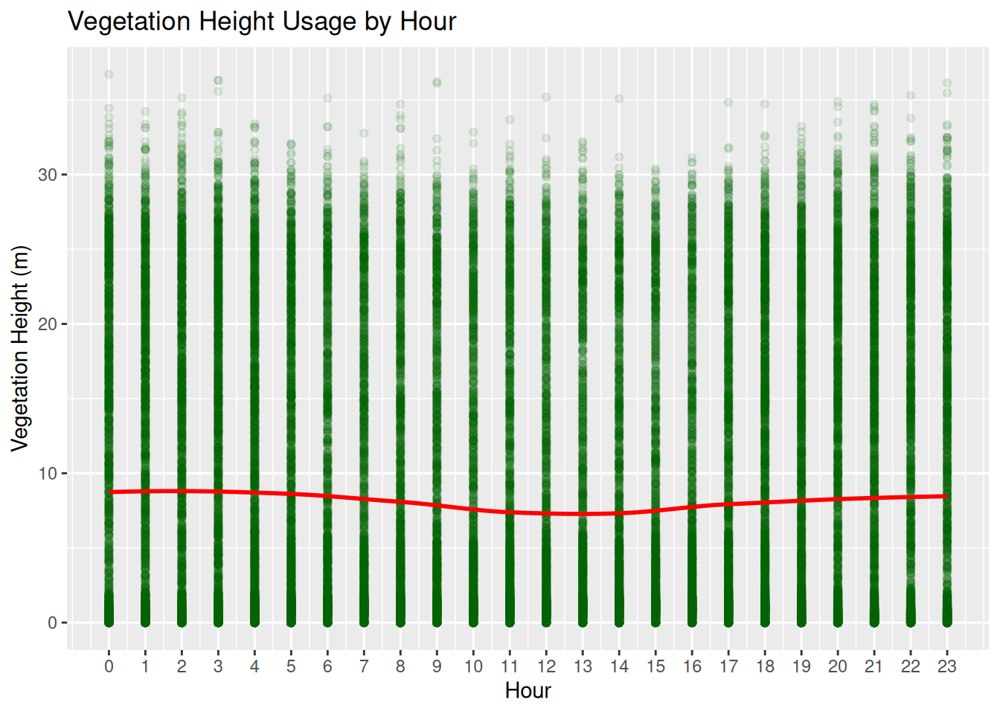
Filter to our three animals
wildschwein_veg_filtered <- wildschwein_veg |>
filter(TierName %in% c("Sabi", "Ruth", "Rosa"))Violin plot comparison
ggplot(wildschwein_veg_filtered, aes(x = TierName, y = vegetation_height)) +
geom_violin(fill = "lightgreen") +
geom_boxplot(width = 0.1, fill = "white") +
labs(title = "Vegetation Height Preferences by Animal",
y = "Vegetation Height (m)")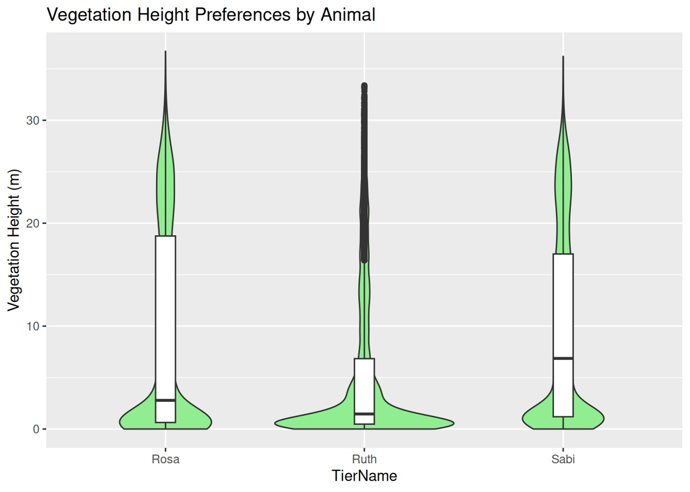